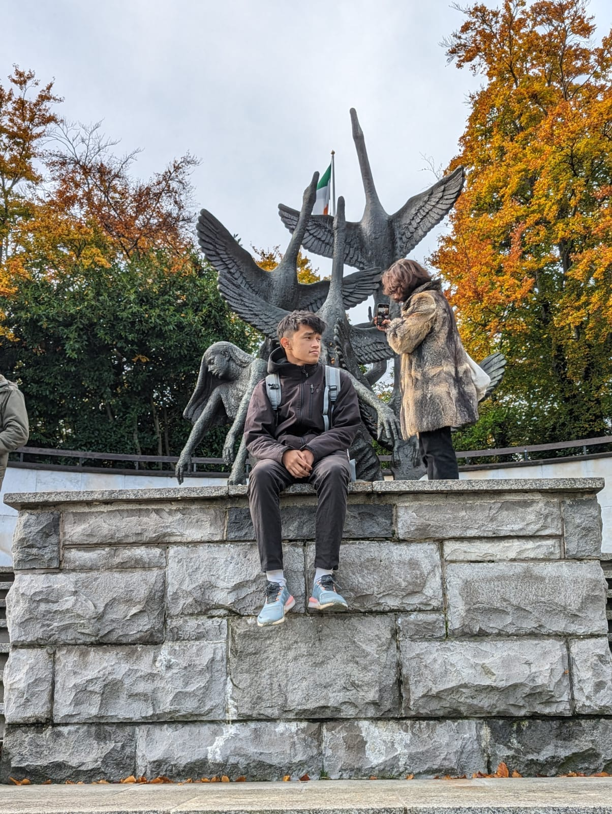

About Me
Get to know the person behind the portfolio
Who I Am
Hello! I'm a passionate technologist and innovator with a deep love for solving complex problems and creating meaningful impact. My journey in technology began with curiosity and has evolved into a career focused on innovation, leadership, and community service.
I believe in the power of technology to transform lives and communities. Whether it's developing cutting-edge solutions, mentoring others, or contributing to social causes, I'm always looking for ways to make a positive difference.
When I'm not coding or working on projects, you can find me exploring new technologies, participating in hackathons, volunteering in my community, or sharing knowledge with others through mentoring and teaching.

Values & Philosophy
Innovation
I believe in pushing boundaries and thinking outside the box to create solutions that make a real impact.
Collaboration
Great things happen when people work together. I value teamwork and diverse perspectives.
Continuous Learning
Technology evolves rapidly, and I'm committed to staying current and expanding my knowledge.
Social Impact
I'm driven by the belief that technology should serve humanity and create positive change.